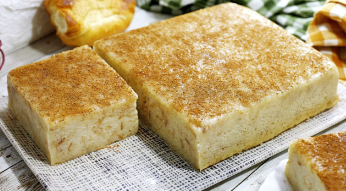

Pudim de Pão

Ingredientes
- 3 pães Amanhecidos
- 3 Ovos
- 500 ml de Leite
- 1 Xícara de Açúcar
- Baunilha(opcional)
Como fazer
- Pique os Pães.
- Bata Tudo no liquidificador
.
- Coloque em forma.
- Asse em Banho-Maria por 45 minutos.
- Espere Esfriar para Desenformar.
Dica
